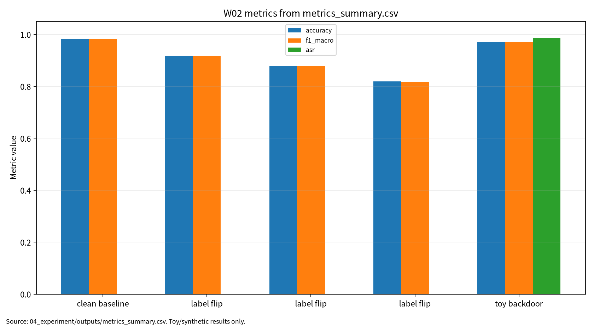

표 0. 제출 메타정보
| 항목 | 내용 |
|---|---|
| 주차 | W02 |
| 작성자 | 박영세 |
| 학번 | 26200122 |
| 보고서 제목 | 대규모 최적화 & 데이터 오염 위협 |
| 과목 범위 | AI 보안 |
| 작성일 | 2026-06-22 |
| 보완일 | 2026-06-23 |
| 문서 상태 | 제출용 보고서 |
| 관련 산출물 위치 | 03_weekly_reports/w02_optimization_data_poisoning/ |
초록
본 보고서는 대규모 최적화와 데이터 오염 위협을 연결하여, 학습 데이터와 라벨 조작이 모델의 최적화 경로와 보안성에 미치는 영향을 분석한다. AI 원리 측면에서는 SGD, mini-batch 학습, 일반화, 효율적 딥러닝을 정리하고, 보안 측면에서는 label-flipping poisoning, training data poisoning, 안전한 toy backdoor 모의실험, clean accuracy와 ASR 분리 평가를 다룬다. scikit-learn digits와 logistic regression을 사용한 최소 toy protocol로 정량값을 기록하되, 결과는 실제 공격 성능이 아니라 평가 구조 설명으로 제한한다.
키워드: 대규모 최적화, SGD, 데이터 오염, poisoning, backdoor, ASR, 재현성
W02는 학습 데이터가 조작될 때 최적화 경로와 최종 모델의 clean accuracy, macro F1, ASR, 재현성 주장이 어떻게 달라지는지를 분석한다.
W02는 W01의 ML 생명주기 보증과 위협모형을 학습 단계로 구체화한다. W01이 ML 시스템을 보안 평가 대상으로 보는 관점을 세웠다면, W02는 학습 데이터와 라벨이 조작될 때 최적화 경로와 최종 모델 보안성이 어떻게 달라지는지를 다룬다. 이후 W03 비전 대적공격, W05 self-supervised/backdoor, W10 연합학습 poisoning, W14 MLOps 공급망 보안과 연결된다.
학습목표는 최적화-일반화 병목 이해, 효율화 기법의 정확도-비용 trade-off 분석, poisoning/backdoor의 공격자 비용모형과 방어평가 설계이다. 핵심 질문은 SGD와 mini-batch 학습의 데이터 품질 민감성, label-flipping과 backdoor의 차이, clean accuracy가 높아도 ASR이 높으면 왜 보안적으로 실패인지에 있다.
대규모 머신러닝 학습은 전체 데이터의 손실을 최소화하는 최적화 문제이며, SGD와 mini-batch update는 확장 가능한 학습의 핵심 절차다[1]. 그러나 일부 데이터로 gradient를 추정하는 구조는 데이터 품질과 라벨 정확도에 민감하다. 효율적 딥러닝은 정확도뿐 아니라 latency, memory, FLOPs, 비용을 함께 고려해야 하며[2], 보안 평가에서도 방어 비용과 재학습 가능성을 함께 기록해야 한다.
표 1. W02 핵심 개념과 보안 연결
| 개념 | 의미 | 보안 연결 |
|---|---|---|
| SGD / mini-batch | 일부 샘플로 업데이트 방향 추정 | 오염 샘플이 gradient 방향에 영향 |
| Generalization | 정상 테스트셋 성능 | clean 성능과 공격 조건 성능 분리 필요 |
| Efficient learning | 비용, 지연시간, 메모리 최적화 | 방어 비용과 배포 가능성 평가 |
| Compression | 모델 크기 축소 | backdoor 잔존/제거 가능성 검토 |
Poisoning 공격은 학습 데이터나 라벨을 조작하여 모델 학습 결과를 왜곡하는 훈련 단계 공격이다[3]. Training data poisoning은 공격자 지식, 데이터 접근 범위, target 여부에 따라 threat model을 세분화해야 한다[4]. Backdoor 공격은 clean accuracy가 높게 유지되더라도 trigger 조건에서 ASR이 높게 나타날 수 있으므로 별도 평가가 필요하다[5].
그림 1. 학습 데이터 오염 기반 ML 보안 평가 흐름
Clean Data / Poisoned Data
|
v
Training / Optimization
|
v
Model
|
+--> Clean Test Evaluation ----> Clean Accuracy, Macro F1
|
+--> Trigger Test Evaluation --> ASR
|
+--> Reproducibility Evidence -> seed, config, Docker, outputs
표 2. 관련 문헌 5편 요약
| ID | 문헌 | 서지 상태 | 활용 |
|---|---|---|---|
| P01 | Bottou et al., Optimization Methods for Large-Scale Machine Learning | DOI 10.1137/16M1080173 확인 |
최적화와 SGD 배경 |
| P02 | Menghani, Efficient Deep Learning | DOI 10.1145/3578938 확인 |
효율성, 압축, 비용 지표 |
| P03 | Tian et al., A Comprehensive Survey on Poisoning Attacks and Countermeasures in Machine Learning | DOI 10.1145/3551636; 저자명은 Zhiyi Tian |
poisoning taxonomy |
| P04 | Cina et al., Wild Patterns Reloaded | DOI 10.1145/3585385; 강의계획서 제목과 동일 여부 확인 필요 |
training data poisoning threat model |
| P05 | Jin et al., A survey of backdoor attacks and defences | DOI 10.1016/j.jnlest.2025.100326 확인 |
backdoor, ASR, detection/removal |
P01-P02는 AI 원리와 운영 제약을 제공하고, P03-P05는 학습 데이터 오염과 backdoor 위협을 제공한다. W02의 핵심은 두 영역을 분리해서 읽지 않는 것이다. 최적화는 데이터로부터 업데이트 방향을 얻고, poisoning은 바로 그 데이터와 라벨을 조작한다.
표 3. W02 Research Track 요약
| 항목 | 내용 |
|---|---|
| 연구문제 | 오염률과 공격 유형에 따라 clean accuracy, macro F1, ASR이 어떻게 변하는가 |
| 대상 시스템 | 지도학습 기반 분류 모델 |
| 위협 | label-flipping poisoning, 안전한 toy backdoor trigger |
| 평가 지표 | clean accuracy, macro F1, ASR, stealthiness, reproducibility evidence |
| 재현성 | Docker, pyproject.toml, config, seed, outputs 로그 |
| 제외 범위 | 실제 개인정보, 실제 서비스, 무단 API, 운영 시스템 공격, 악성코드 실행 |
본 실습은 실제 공격 재현이 아니라 W02의 핵심인 데이터 오염 평가축을 안전하게 설명하기 위한 최소 toy protocol이다. 따라서 scikit-learn digits와 logistic regression을 사용하되, 평가 구조는 이후 딥러닝 모델과 대규모 모델에도 확장 가능하도록 clean accuracy, macro F1, ASR, reproducibility evidence로 분리하였다.
표 4. W02 실습 설계
| 단계 | 설계 내용 | 기록할 지표 |
|---|---|---|
| Clean baseline | 표준화 + Logistic Regression 학습 | accuracy, precision, recall, macro F1 |
| Label-flip 5/10/20% | 학습 라벨 일부를 다음 클래스로 변경 | accuracy drop, macro F1 |
| 안전한 toy backdoor 5% | 단순 픽셀 trigger를 공개 toy 데이터셋에만 적용 | clean accuracy, ASR |
표 5. W02 실습 결과
| 조건 | Poisoning Rate | N Poisoned | Clean Accuracy | Macro F1 | ASR |
|---|---|---|---|---|---|
| Clean baseline | 0% | 0 | 0.981481 | 0.981443 | 해당 없음 |
| Label-flip | 5% | 63 | 0.918519 | 0.918457 | 해당 없음 |
| Label-flip | 10% | 126 | 0.877778 | 0.877582 | 해당 없음 |
| Label-flip | 20% | 251 | 0.818519 | 0.818134 | 해당 없음 |
| Safe toy backdoor | 5% | 63 | 0.970370 | 0.970359 | 0.987654 |
정량값은 04_experiment/outputs/metrics_summary.csv, results.json, run_log.md 기준이다. 안전한 toy backdoor 결과는 실제 공격 성공률이 아니라 clean accuracy와 ASR을 분리 보고해야 함을 설명하는 예시다.
그림 7. W02 metrics summary chart

출처: 04_experiment/outputs/metrics_summary.csv. 이 그래프는 공개 toy/synthetic 산출물 기반이며 실제 공격 성능이나 운영 환경 성능으로 일반화하지 않는다.
AI 도구는 문헌 요약, 코드 점검, 문장 구조화, 그래프 생성 보조에 사용하였다. 모든 DOI/URL, 실험 수치, 본문 인용, 결론은 작성자가 outputs 파일과 로컬 참고문헌 검증표를 대조하여 검증한다.
표. W02 AI 도구 활용 및 검증 기록
| 항목 | 내용 |
|---|---|
| 사용 도구명 | Codex, ChatGPT 계열 도구 |
| 사용 일자 | 2026-06-23 |
| 사용 목적 | 문헌 요약 정리, 보고서 구조화, 안전한 toy/synthetic 실험 결과 표기 점검, 그래프 생성 보조, 제출 전 체크리스트 정리 |
| 주요 프롬프트 요약 | 주차별 제출 보고서 보완, 참고문헌 검증표 정리, metrics_summary.csv 기반 그래프 생성, AI 활용 고지 작성 |
| AI 산출물 반영 위치 | 07_week_submission/w02_submission_report.md, 07_week_submission/assets/w02_metric_chart.png, 05_ai_worklog/ai_disclosure_draft.md |
| 본인 수정 내용 | 주차별 문헌 상태 확인, 실험 수치와 outputs 대조, 안전 범위와 한계 문장 확인, 최종 제출 전 미확정 문헌 분리 |
| 사실관계 검증 방법 | 01_papers/paper_list.md, 01_papers/doi_check.md, 05_references/doi_index.md, 강의계획서 문헌표 대조 |
| 참고문헌 검증 방법 | 제목, 저자, 연도, 학술지/학회, DOI/URL, 본문 인용번호와 참고문헌 목록 대응 확인 |
| 실험결과 검증 방법 | 04_experiment/outputs/metrics_summary.csv, results.json, run_log.md의 수치와 보고서 표기 대조 |
| 최종 책임 확인 | AI 산출물은 초안 보조이며 최종 제출자는 원고 내용, 인용, 실험결과, 연구윤리 책임을 확인한다. |
추천 주제는 "학습 데이터 오염과 backdoor 평가를 위한 다중지표 프레임워크"이다. 기여 후보는 clean accuracy, ASR, stealthiness, detection rate, efficiency cost, reproducibility evidence를 함께 기록하는 평가표다.
표 6. KCI 논문 제목 후보
| 번호 | 국문 제목 후보 | 영문 제목 후보 | 예상 기여 |
|---|---|---|---|
| 1 | 학습 데이터 오염과 백도어 공격 평가를 위한 다중지표 프레임워크 연구 | A Multi-Metric Evaluation Framework for Training Data Poisoning and Backdoor Attacks | Clean accuracy와 ASR 분리 평가 |
| 2 | 데이터 오염률이 머신러닝 모델의 정상 성능과 공격 성공률에 미치는 영향 분석 | An Analysis of the Impact of Data Poisoning Rates on Clean Performance and Attack Success Rate in Machine Learning Models | 오염률-성능 변화 분석 |
| 3 | AI 보안 평가에서 Clean Accuracy와 ASR 분리 기록의 필요성 연구 | A Study on the Need to Separately Report Clean Accuracy and Attack Success Rate in AI Security Evaluation | 다중지표 평가표 제안 |
추천 제목은 "학습 데이터 오염과 백도어 공격 평가를 위한 다중지표 프레임워크 연구"이다. 연구문제는 오염률 증가에 따른 clean accuracy와 macro F1 변화, toy backdoor 조건에서 clean accuracy와 ASR의 괴리, poisoning/backdoor 평가에 필요한 지표 조합이다. 국내 참고문헌 3편 이상은 확인 필요하다.
SCI형 제목 후보는 "A Multi-Metric Evaluation Framework for Training Data Poisoning and Backdoor Attacks: Separating Clean Performance, Attack Success Rate, and Reproducibility Evidence"이다.
표 7. SCI Related Work 축
| 연구축 | 대표 논문 | 역할 |
|---|---|---|
| Large-scale optimization | Bottou et al. | 학습 목적함수와 SGD 기반 최적화 |
| Efficient deep learning | Menghani | 정확도-비용-속도 trade-off |
| Poisoning attacks | Tian et al. | poisoning taxonomy와 대응책 |
| Training data poisoning | Cina et al. 또는 현재 P04 | threat model과 systematic review |
| Backdoor attacks | Jin et al. | clean accuracy와 ASR 분리 평가 |
SCI형 논문은 Background, Problem, Method, Results, Contribution, Implications의 structured abstract로 확장 가능하다. 단, W02 실험은 toy dataset과 logistic regression 기반이므로 실제 대규모 모델 또는 LLM backdoor 성능으로 일반화하지 않는다.
| 번호 | 참고문헌 | DOI/URL | 상태 |
|---|---|---|---|
| [1] | Bottou et al., "Optimization Methods for Large-Scale Machine Learning" | 10.1137/16M1080173 |
확인 완료 |
| [2] | Menghani, "Efficient Deep Learning" | 10.1145/3578938; arXiv 2106.08962 |
확인 완료. Article 번호 확인 필요 |
| [3] | Zhiyi Tian et al., "A Comprehensive Survey on Poisoning Attacks and Countermeasures in Machine Learning" | 10.1145/3551636 |
확인 완료 |
| [4] | Cina et al., "Wild Patterns Reloaded" | 10.1145/3585385; arXiv 2205.01992 |
DOI 확인 완료. 강의계획서 P04 제목과 동일 여부 확인 필요 |
| [5] | Ling-Xin Jin et al., "A survey of backdoor attacks and defences" | 10.1016/j.jnlest.2025.100326 |
확인 완료 |
| 점검 항목 | 상태 | 비고 |
|---|---|---|
| 1장 한 문장 요약 작성 | 완료 | |
| 2장 학습 배경과 주차 목표 작성 | 완료 | |
| AI 원리 70% 정리 | 완료 | |
| 보안 이슈 30% 정리 | 완료 | |
| 논문 5편 요약 | 완료 | |
| 논문 5편 비교표 | 완료 | |
| Research Track 5요소 작성 | 완료 | 연구문제, 위협모형, 평가방법, 재현성, 오픈문제 |
| P02 최종 출판판 검증 | 완료 | DOI 확인, Article 번호 확인 필요 |
| P04 최종 출판판 검증 | 확인 필요 | DOI 확인, 강의계획서 제목 동일 여부 확인 필요 |
| 실험 outputs 파일 존재 확인 | 완료 | CSV/JSON/run log 존재 |
| 실험 결과와 보고서 수치 일치 | 완료 | outputs 기준 반영 |
| KCI 논문 형식 전환 작성 | 완료 | |
| SCI 논문 형식 전환 작성 | 완료 | |
| 본문 인용과 참고문헌 대응 | 완료 | [1]-[5] 대응 |
| 표·그림 번호 정리 | 완료 | 표 0-7, 그림 1 |
| AI 활용 고지 작성 | 완료 | |
| PDF 저작권 위험 점검 | 완료 | PDF 원문은 Git 추적 해제 완료(로컬 파일 보존) |
| 최종 사람이 검토할 항목 표시 | 완료 | P04, ACM Article 번호, PDF 보관 정책 |
[1] Leon Bottou, Frank E. Curtis, and Jorge Nocedal, "Optimization Methods for Large-Scale Machine Learning," SIAM Review, 60(2), 223-311, 2018. DOI: 10.1137/16M1080173.
[2] Gaurav Menghani, "Efficient Deep Learning: A Survey on Making Deep Learning Models Smaller, Faster, and Better," ACM Computing Surveys, 55(12), 1-37, 2023. DOI: 10.1145/3578938.
[3] Zhiyi Tian, Lei Cui, Jie Liang, and Shui Yu, "A Comprehensive Survey on Poisoning Attacks and Countermeasures in Machine Learning," ACM Computing Surveys, 55(8), 1-35, 2022/2023. DOI: 10.1145/3551636.
[4] Antonio Emanuele Cina et al., "Wild Patterns Reloaded: A Survey of Machine Learning Security against Training Data Poisoning," ACM Computing Surveys, 55(13s), 1-39, 2023. DOI: 10.1145/3585385. 강의계획서 P04 제목과 동일 여부 확인 필요.
[5] Ling-Xin Jin et al., "A survey of backdoor attacks and defences: From deep neural networks to large language models," Journal of Electronic Science and Technology, 23(3), Article 100326, 2025. DOI: 10.1016/j.jnlest.2025.100326.